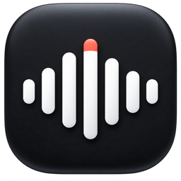

按住，说中文。
默认按住右 Option，在熟悉的输入框里自然开口。

Saylane让表达，即刻发生。Speak like native speaker in native way.
默认按住右 Option，在熟悉的输入框里自然开口。
短语级译文直接更新，松开提交最终文字。Esc 随时取消。
不用复制粘贴，不用打开另一个窗口。打字时，仍然是拼音输入法。
双击右侧 ⌘，换一种表达方式。
需要时翻译，准备好时，直接用英语开口。
我想试试用英语表达自己的想法。
I'd like to try expressing my ideas in English.
切到中译英。把想说的话说出来，看看英文可以怎样表达。
切到英文听写。按住说话键，试着用自己的英语把想法说出来。
对照转写文字，自行检查用词。从一条消息、一句回复开始。
当前下载为改名前的 v0.2.47 安装包，安装后仍显示旧名称。签名说明：包内应用已做 Developer ID 签名；PKG 安装器本身未签名、未完成 Apple 公证，macOS 可能阻止直接打开。